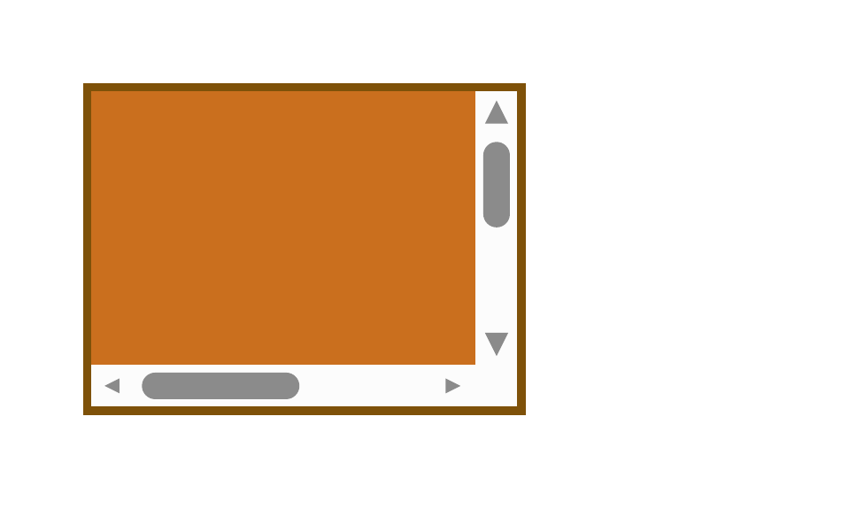

REFERENCE-DISPUTED 2554 px · above-floor 0.44% · raw 0.47% max-page diff overflow-scroll-print-clip · scroll · REFERENCE DISPUTEDMissingmissing 0.6%extra 0.5%ΔE 0.2

why: candidate lacks paint present in reference (0.6%)
overflow:scroll establishes a scroll container. In static print media, the exact overflow indicator and placement of printed overflow are UA-defined, so the Chrome PDF is retained only as a compatibility canary.
reference dispute: CSS Overflow 3 section 3.1.3 allows static-media UAs to show an overflow indication and says overflowing scroll content may be printed without defining where; Chrome's exact scrollbar and clipping pixels are not a normative oracle.
regions (266 total; showing 64 representatives)
Complete dominant-class aggregates
| class | regions | pixels | union bbox (CSS px) | largest px | maximum magnitude |
|---|---|---|---|---|---|
| Missing | 27 | 984 | 3,3 → 154,114 | 744 | total 0.5% · largest 0.4% |
| Extra | 52 | 809 | 8,6 → 154,114 | 158 | total 0.4% · largest 0.08% |
| ColorErr | 187 | 761 | 8,6 → 154,116 | 152 | total 0.4% · largest 0.08% · max ΔE 0.2 |
Representative region details (worst-first)
| class | bbox (CSS px) | area% | magnitude | reason |
|---|---|---|---|---|
| Missing | 3,3 → 142,102 | 0.4 | candidate lacks paint present in reference (0.4%) | |
| Extra | 24,114 → 75,114 | 0.08 | candidate adds paint absent from reference (0.08%) | |
| AntialiasCoverage | 25,104 → 73,105 | 0.08 | ΔRGB(-98,-98,-98) | antialiasing coverage residue on a shared outline |
| Extra | 26,104 → 73,104 | 0.08 | candidate adds paint absent from reference (0.08%) | |
| Extra | 146,92 → 153,98 | 0.08 | candidate adds paint absent from reference (0.08%) | |
| Extra | 147,6 → 151,11 | 0.04 | candidate adds paint absent from reference (0.04%) | |
| Extra | 154,24 → 154,49 | 0.04 | candidate adds paint absent from reference (0.04%) | |
| AntialiasCoverage | 144,25 → 145,47 | 0.04 | ΔRGB(-98,-98,-98) | antialiasing coverage residue on a shared outline |
| Extra | 144,26 → 144,47 | 0.04 | candidate adds paint absent from reference (0.04%) | |
| ColorValue | 21,102 → 21,116 | 0.03 | ΔE 0.2 ΔRGB(-1,-1,-1) | fill recolour ΔRGB(-1,-1,-1) (ΔE 0.2) |
| Extra | 145,14 → 153,14 | 0.03 | candidate adds paint absent from reference (0.03%) | |
| Missing | 9,105 → 13,108 | 0.02 | candidate lacks paint present in reference (0.02%) | |
| ColorValue | 142,102 → 142,116 | 0.02 | ΔE 0.2 ΔRGB(-1,-1,-1) | fill recolour ΔRGB(-1,-1,-1) (ΔE 0.2) |
| Missing | 9,110 → 13,114 | 0.02 | candidate lacks paint present in reference (0.02%) | |
| Missing | 131,105 → 134,108 | 0.02 | candidate lacks paint present in reference (0.02%) | |
| Missing | 131,111 → 134,114 | 0.02 | candidate lacks paint present in reference (0.02%) | |
| AntialiasCoverage | 145,90 → 153,91 | 0.02 | ΔRGB(98,98,98) | antialiasing coverage residue on a shared outline |
| Missing | 145,90 → 154,90 | 0.02 | candidate lacks paint present in reference (0.02%) | |
| AntialiasCoverage | 145,13 → 153,14 | 0.01 | ΔRGB(-73,-73,-73) | antialiasing coverage residue on a shared outline |
| AntialiasCoverage | 12,107 → 13,112 | 0.01 | ΔRGB(-73,-73,-73) | antialiasing coverage residue on a shared outline |
| AntialiasCoverage | 131,107 → 132,112 | 0.01 | ΔRGB(39,39,39) | antialiasing coverage residue on a shared outline |
| AntialiasCoverage | 148,21 → 150,21 | 0.005333 | ΔRGB(39,39,39) | antialiasing coverage residue on a shared outline |
| Missing | 153,13 → 154,14 | 0.003733 | candidate lacks paint present in reference (0.003733%) | |
| AntialiasCoverage | 152,91 → 153,92 | 0.003733 | ΔRGB(-20,-20,-20) | antialiasing coverage residue on a shared outline |
| AntialiasCoverage | 149,94 → 150,95 | 0.003733 | ΔRGB(-86,-86,-86) | antialiasing coverage residue on a shared outline |
| Missing | 148,21 → 150,21 | 0.003200 | candidate lacks paint present in reference (0.003200%) | |
| Missing | 21,108 → 21,110 | 0.003200 | candidate lacks paint present in reference (0.003200%) | |
| AntialiasCoverage | 147,11 → 147,12 | 0.003200 | ΔRGB(-20,-20,-20) | antialiasing coverage residue on a shared outline |
| AntialiasCoverage | 152,22 → 153,22 | 0.003200 | ΔRGB(39,39,39) | antialiasing coverage residue on a shared outline |
| AntialiasCoverage | 78,108 → 78,110 | 0.003200 | ΔRGB(-73,-73,-73) | antialiasing coverage residue on a shared outline |
| AntialiasCoverage | 135,109 → 136,110 | 0.003200 | ΔRGB(-13,-13,-13) | antialiasing coverage residue on a shared outline |
| AntialiasCoverage | 8,109 → 9,110 | 0.003200 | ΔRGB(9,9,9) | antialiasing coverage residue on a shared outline |
| AntialiasCoverage | 22,112 → 22,113 | 0.003200 | ΔRGB(39,39,39) | antialiasing coverage residue on a shared outline |
| AntialiasCoverage | 145,24 → 145,25 | 0.002667 | ΔRGB(-25,-25,-25) | antialiasing coverage residue on a shared outline |
| AntialiasCoverage | 145,48 → 145,49 | 0.002667 | ΔRGB(-57,-57,-57) | antialiasing coverage residue on a shared outline |
| AntialiasCoverage | 150,52 → 151,52 | 0.002667 | ΔRGB(-48,-48,-48) | antialiasing coverage residue on a shared outline |
| AntialiasCoverage | 24,105 → 25,105 | 0.002667 | ΔRGB(-25,-25,-25) | antialiasing coverage residue on a shared outline |
| AntialiasCoverage | 74,105 → 75,105 | 0.002667 | ΔRGB(-48,-48,-48) | antialiasing coverage residue on a shared outline |
| AntialiasCoverage | 76,106 → 77,106 | 0.002667 | ΔRGB(-20,-20,-20) | antialiasing coverage residue on a shared outline |
| Missing | 145,13 → 145,14 | 0.002133 | candidate lacks paint present in reference (0.002133%) | |
| Extra | 145,48 → 145,49 | 0.002133 | candidate adds paint absent from reference (0.002133%) | |
| Extra | 148,52 → 149,52 | 0.002133 | candidate adds paint absent from reference (0.002133%) | |
| Extra | 74,105 → 75,105 | 0.002133 | candidate adds paint absent from reference (0.002133%) | |
| Extra | 78,109 → 78,110 | 0.002133 | candidate adds paint absent from reference (0.002133%) | |
| Extra | 78,110 → 78,111 | 0.002133 | candidate adds paint absent from reference (0.002133%) | |
| AntialiasCoverage | 151,11 → 151,11 | 0.002133 | ΔRGB(-10,-10,-10) | antialiasing coverage residue on a shared outline |
| AntialiasCoverage | 146,12 → 146,13 | 0.002133 | ΔRGB(39,39,39) | antialiasing coverage residue on a shared outline |
| AntialiasCoverage | 146,22 → 147,22 | 0.002133 | ΔRGB(59,59,59) | antialiasing coverage residue on a shared outline |
| AntialiasCoverage | 153,23 → 153,23 | 0.002133 | ΔRGB(-10,-10,-10) | antialiasing coverage residue on a shared outline |
| AntialiasCoverage | 154,24 → 154,25 | 0.002133 | ΔRGB(-39,-39,-39) | antialiasing coverage residue on a shared outline |
| AntialiasCoverage | 154,48 → 154,49 | 0.002133 | ΔRGB(-48,-48,-48) | antialiasing coverage residue on a shared outline |
| AntialiasCoverage | 148,52 → 148,52 | 0.002133 | ΔRGB(-39,-39,-39) | antialiasing coverage residue on a shared outline |
| AntialiasCoverage | 148,93 → 148,94 | 0.002133 | ΔRGB(-10,-10,-10) | antialiasing coverage residue on a shared outline |
| AntialiasCoverage | 22,106 → 22,107 | 0.002133 | ΔRGB(59,59,59) | antialiasing coverage residue on a shared outline |
| AntialiasCoverage | 134,110 → 135,110 | 0.002133 | ΔRGB(10,10,10) | antialiasing coverage residue on a shared outline |
| AntialiasCoverage | 23,113 → 23,113 | 0.002133 | ΔRGB(-10,-10,-10) | antialiasing coverage residue on a shared outline |
| AntialiasCoverage | 24,114 → 25,114 | 0.002133 | ΔRGB(-39,-39,-39) | antialiasing coverage residue on a shared outline |
| AntialiasCoverage | 74,114 → 75,114 | 0.002133 | ΔRGB(-39,-39,-39) | antialiasing coverage residue on a shared outline |
| Extra | 145,24 → 145,25 | 0.001600 | candidate adds paint absent from reference (0.001600%) | |
| Extra | 150,52 → 150,52 | 0.001600 | candidate adds paint absent from reference (0.001600%) | |
| Extra | 24,105 → 25,105 | 0.001600 | candidate adds paint absent from reference (0.001600%) | |
| Extra | 78,108 → 78,108 | 0.001600 | candidate adds paint absent from reference (0.001600%) | |
| AntialiasCoverage | 152,12 → 152,12 | 0.001600 | ΔRGB(-3,-3,-3) | antialiasing coverage residue on a shared outline |
| AntialiasCoverage | 147,21 → 148,21 | 0.001600 | ΔRGB(30,30,30) | antialiasing coverage residue on a shared outline |
source · cases/overflow-clipping/overflow-scroll-print-clip.html
1<!DOCTYPE html>
2<html lang="en">
3<head>
4<meta charset="utf-8">
5<title>overflow scroll in print</title>
6<style>
7 @page { size: 304px 184px; margin: 0; }
8 html { font-family: ParitySans; line-height: 1.5; }
9 * { margin: 0; box-sizing: border-box; }
10 html, body { background: #ffffff; }
11 .wrap { padding: 30px; }
12 /* In print, CSS Overflow permits a scroll-overflow indication and leaves
13 printed overflow placement undefined. This is a Chrome compatibility
14 canary, not a normative assertion about scrollbar pixels or clipping. */
15 .clip {
16 overflow: scroll;
17 width: 160px;
18 height: 120px;
19 background: #fdf2e9;
20 border: 3px solid #7e5109;
21 }
22 .child {
23 width: 250px;
24 height: 200px;
25 background: #ca6f1e;
26 }
27</style>
28</head>
29<body>
30 <div class="wrap">
31 <div class="clip">
32 <div class="child"></div>
33 </div>
34 </div>
35</body>
36</html>